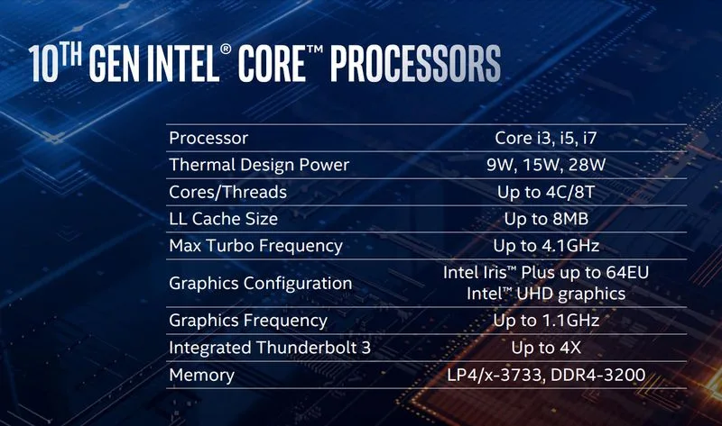
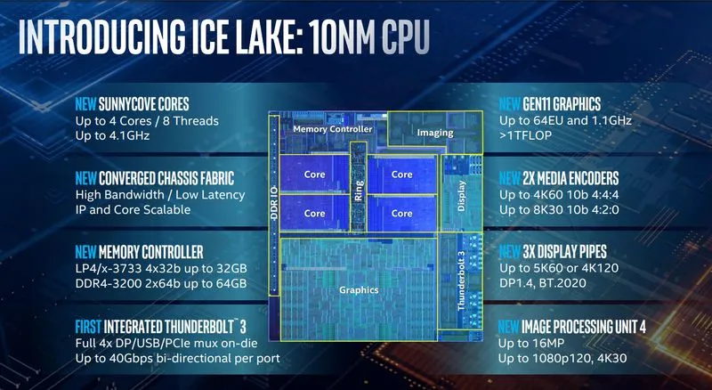

จุดเด่นของเจ้า Ice Lake เลยก็คือตัว CPU จะใช้เทคโนโลยีการผลิตแบบ 10nm มาพร้อมกับชิปประมวลผล GPU รุ่นใหม่ “Iris Plus” ที่จะใช้การประมวลผลแบบ AI
เข้ามามีส่วนช่วยให้ประสิทธิภาพการทำงานสูงขึ้นไปอีก 2 เท่าตัวนอกจากนั้น Intel ยังได้ทำการนำเอาเทคโนโลยี Thunderbolt 3 และ integrated Intel Wi-Fi 6 (Gig+) มารวมกันเป็นครั้งแรก
จะช่วยทำให้การเชื่อมต่ออินเตอร์แบบไร้สายเร็วขึ้นเกือบ 3 เท่า

